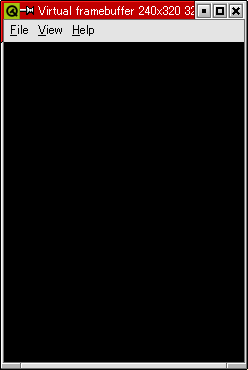
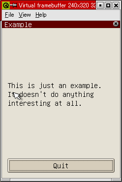
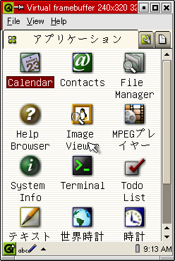
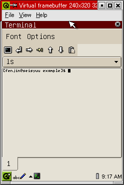
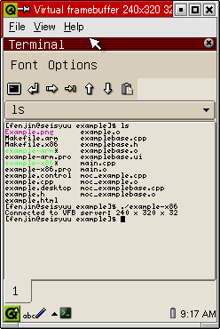
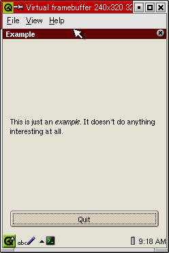

トップページ＞＞＞「ぷろぐらみんぐ」目次
Qtopia事始め（Zaurus用クロスコンパイル環境の構築）
初版作成：2003/01/06
注意
2008/11月現在、実に5年前のドキュメントです。外部サイトリンクが多数リンク切れになっています。あくまでも参考としてご利用下さい。
- 前書き
- 本題
- 後書き或いは感想
バイト先の先輩が SL-A300 を使っている。
Linuxを使っていると聞いて私もちょくちょく見せて貰っている。
先輩は「ソフトも開発者も揃ってない。ソフトはJavaベースばかりだし。」とよく嘆く。
「ねえ○○（私の名前）くん、早くこっちの世界においでよ。」
私の部屋の本棚には、SLシリーズを目にするよりも前に購入していたKDE本があった。
私は今、ちょうどクロスコンパイルや組み込みLinux/UNIXに興味がある。
そして私はなぜかGTK+には興味が向かず、Qt/KDEに目が向いていた。
終わったな・・・。
ああ。このページを先輩に見せたときの反応が今にも予想できる。
「くっくっく。○○くん、ついに堕ちたね。」
ええ・・・まあ・・・そう言うわけで、ついに手を出してしまいました。
ベースとなる資料はシャープから提供されている「"SL-A300" + "Qt/E / Qtopia" 開発環境セットアップガイド」です。
これは参考リンクに載せてある「ザウルス宝箱 Pro」からたどれる、「SLシリーズ技術サポートページ」
から入手できるPDFファイルで、SL-A300用のアプリケーションの開発環境を Linux 上で構築する手順が書かれています。
基本的にそのPDFの構成に従い、実際のコマンドライン風景を交えてインストールからコンパイル動作の確認を追って行きます。
目次に戻る
- Zaurus用クロスコンパイラのセットアップ
- Qtopiaのセットアップ
- Zaurus ARM 用環境設定
- コンパイルテスト
- qvfbの使用方法
- コンソールでの開発
- （番外編）QtopiaドキュメントのNAMAZU化
- 参考リンク
Zaurus用クロスコンパイラのセットアップ
「本題」に戻る
さて、とりあえずZaurus用のクロスコンパイラキットをインストールしてしまいます。
これらはシャープより半ば純正品と化して RPM として提供されています。以下の四つのRPMをダウンロードします。
Qtの開発ツールであるtmakeもリストにありますが、Qtopiaを使うときに必須ですのでついでにダウンロードしといてください。
すべてのパッケージは各種ファイルのインストール先が「/opt/Embedix」になっているので多分あまりシステムには影響を
及ぼさないはずです。安心してください。
SL-5500用と同じ云々と書いてありますが、要するにSL-5500でもSL-A300でも使えますよ、ということです。
んで、
# rpm -Uvh gcc-cross-sa1100-2.95.2-0.i386.rpm
とかして４つのRPMパッケージをインストールしちゃってください。ファイルのインストール先は「/opt/Embedix」下です。
不安な方や慎重な方は「rpm -qpl」とかで調べちゃってください。
Qtopiaのセットアップ
「本題」に戻る
Zaurus用のアプリケーションはC++とTrolltech社のQtを使って開発します。んで、Qtopiaっちゅーのはぶっちゃけた話、
PIM用にチューンナップされたQtベースのデスクトップ環境です。あとで画面をお見せしますが、基本的なエディタやmpeg
プレーヤ、そのほか文字入力・手書き認識などの機能を一通り備えた一種のサーバーと化しています。
んで、Qtopiaには通常のX11上でアプリケーションのテストを実行できる仮想フレームバッファ(qvfb)を提供しています。
qvfbを使えば、クロスコンパイルしたQtopiaソフトをわざわざZaurus上まで引っ張ってこなくても、X上でシミュレートというか
実行できるわけです。
よーするにZaurus用のアプリを作る、ということは「Qtopia用に作成したプログラムを ARM プロセッサ用にクロスコンパイル
する」ということです（ここで言うアプリとはZaurusのQtopia用に作られたGUIソフトウェアのことです）。
というわけで、QtopiaやらそのためのQt用のライブラリを含む QtopiaのSDKをダウンロードします。
QtopiaのダウンロードはTrolltech本社のWebページからたどれます。
Open Source SDK for Qtopia
ダウンロードに関してですが、以前QtのX11用を入手しようとgFTPでダウンロードしようとしたができず、コマンドラインFTPで
ダウンロードできたことがあります。もしお使いのFTPクライアント、またはブラウザからダウンロードが出来ないようでしたら、
コマンドラインFTPでダウンロードしてください。そのあたりの記録はtmakeのインストールと動作確認
にて記録してあります。
なお今回紹介するのは個人用のGPLライセンスに基づいた無償版です。商用に関しては別途Trolltechへ問い合わせてください。
初期設定ではQtopia SDKは /opt/Qtopia にインストールされます。なおこの中にtmakeも含まれています。既にtmakeの最新版
を入れてしまった方などはどちらを利用すべきか迷うところですが、tmake-1.8のtmakeとdiffしたところ、全く同じ内容でした。
ので、その点に関しては特に心配する必要は無いと思われます。
んで、Qtopiaのインストールが済みましたらどこかパスの通った場所に二つのバッチファイルを作成します。
x86用とARMクロスコンパイル用の環境変数の設定を行うバッチファイルです。
x86用はqvfbを使うときにも使用します。
X86ターゲット用「dev-x86-qpe.sh」
#!/bin/bash
CROSSCOMPILE=/opt/Embedix/tools
QPEDIR=/opt/Qtopia
QTDIR=/opt/Qtopia
PATH=$QTDIR/bin:$QPEDIR/bin:$PATH:/opt/Embedix/tools/bin
TMAKEPATH=/opt/Qtopia/tmake/lib/qws/linux-x86-g++/
LD_LIBRARY_PATH=$QTDIR/lib:$LD_LIBRARY_PATH
export QPEDIR QTDIR PATH TMAKEPATH LD_LIBRARY_PATH PS1
echo "Altered environment for sharp Zaurus Development x86"
$*
ARMターゲット用「dev-arm-qpe.sh」
#!/bin/bash
CROSSCOMPILE=/opt/Embedix/tools
QPEDIR=/opt/Qtopia/sharp
QTDIR=/opt/Qtopia/sharp
PATH=$QTDIR/bin:$QPEDIR/bin:$CROSSCOMPILE/bin:$PATH
TMAKEPATH=/opt/Qtopia/tmake/lib/qws/linux-sharp-g++/
LD_LIBRARY_PATH=$QTDIR/lib:$LD_LIBRARY_PATH
export QPEDIR QTDIR PATH TMAKEPATH LD_LIBRARY_PATH PS1
echo "Altered environment for sharp Zaurus Development ARM"
$*
実はシャープの提供する「開発環境セットアップガイド」には最後の「$*」は載っていません。この理由は後述します。
んで、作りましたら両スクリプトファイルにchmod +xとかして実行権を付けてあげましょう。
以降、QtopiaのX86用をコンパイルするときはdev-x86-qpe.shを、ARM用をコンパイルするときはdev-arm-qpe.shをそれぞれ
利用することになります。
Zaurus ARM 用環境設定
「本題」に戻る
んで、ZaurusARMクロスコンパイル用のtmake設定ファイルをインストールします。
「Qtopiaのセットアップ」で記載しているARM用シェルスクリプト例に記述していますが、環境変数 TMAKEPATH にてターゲット
となるシャープ用のMakefile環境定義（実体はtmake設定ファイル）を指定しますので、インストールしときます。
よーするにtmake設定ファイル for SLシリーズ
をダウンロードしてきます。んで、こんな感じにインストールします。
[fenjin@seisyuu fenjin]$ ls
...
tmake-sharp.tar.gz
...
[fenjin@seisyuu fenjin]$ tar zxvf tmake-sharp.tar.gz
README-sharp
linux-sharp-g++/
linux-sharp-g++/app.t
linux-sharp-g++/lib.t
linux-sharp-g++/subdirs.t
linux-sharp-g++/tmake.conf
[fenjin@seisyuu fenjin]$ su
（ここで/opt/Qtopia/tmake/lib/qwsを見ると既にlinux-sharp-g++ディレクトリが存在しています。適当にリネームしといて下さい。）
[root@seisyuu fenjin]# cp -rp linux-sharp-g++ /opt/Qtopia/tmake/lib/qws/
[root@seisyuu fenjin]# ls /opt/Qtopia/tmake/lib/qws/
...
linux-sharp-g++/
linux-sharp-g++.bak/ （前のliux-sharp-g++をリネームしてバックアップしたディレクトリです）
...
以上でコンパイルに必要な下準備は完了しました。Qtopiaにくっついてくる動作確認用サンプルをコンパイルしてみましょう。
コンパイルテスト
「本題」に戻る
というわけでコンパイルテストです。Qtopia添付の動作確認用サンプル、/opt/Qtopia/exampleを適当な場所にコピーしときます。
[fenjin@seisyuu fenjin]$ cd in_vitro/src
[fenjin@seisyuu src]$ cp -rp /opt/Qtopia/example ./
[fenjin@seisyuu src]$ ls
...
example/
...
[fenjin@seisyuu src]$ cd example/
[fenjin@seisyuu example]$ ls
Example.png example.cpp example.h example.pro main.cpp
example.control example.desktop example.html examplebase.ui
[fenjin@seisyuu example]$ cat example.pro
TEMPLATE = app
#CONFIG = qt warn_on debug
CONFIG = qt warn_on release
HEADERS = example.h
SOURCES = main.cpp example.cpp
INCLUDEPATH += $(QPEDIR)/include
DEPENDPATH += $(QPEDIR)/include
LIBS += -lqpe
INTERFACES = examplebase.ui
TARGET = example
んでもって、既にtmakeの使うプロジェクトファイルが作られてしまっています。通常のproファイルとの違いは「LIBS」に「-lqpe」
が追加されているところでしょう。これがQtopia用のライブラリ設定です。
またコンパイルはリリース用になっています。debugオプションがコメントアウトされてます。
さて、それではtmakeで作ってみましょう。・・・その前に。ARMと区別しやすいよう、example.proをexample-x86.pro
とexample-arm.proと二つにコピーします。んで、TARGETを example-x86 と example-arm にそれぞれ変更しておきましょう。
[fenjin@seisyuu example]$ mv example.pro example-x86.pro
[fenjin@seisyuu example]$ cp example-x86.pro example-arm.pro
[fenjin@seisyuu example]$ vi example-x86.pro
[fenjin@seisyuu example]$ vi example-arm.pro
んでいよいよtmakeを使います。dev-x86-qpe.shの使い方に注目して下さい。
[fenjin@seisyuu example]$ dev-x86-qpe.sh tmake -o Makefile.x86 example-x86.pro
Altered environment for sharp Zaurus Development x86
[fenjin@seisyuu example]$ ls
...
Makefile.x86
...
[fenjin@seisyuu example]$ dev-x86-qpe.sh make -f Makefile.x86
Altered environment for sharp Zaurus Development x86
/opt/Qtopia/bin/uic examplebase.ui -o ./examplebase.h
g++ -c -pipe -DQWS -fno-exceptions -fno-rtti -Wall -W -O2 -fno-default-inline
-DNO_DEBUG -I/opt/Qtopia/include -I/opt/Qtopia/include -o main.o main.cpp
...
gcc -o example-x86 main.o example.o examplebase.o moc_example.o moc_examplebase.o
-L/opt/Qtopia/lib -lqpe -lqte
[fenjin@seisyuu example]$ ls
...
Makefile.x86
...
example-x86*
...
[fenjin@seisyuu example]$ file example-x86
example-x86: ELF 32-bit LSB executable, Intel 80386, version 1 (SYSV),
dynamically linked (uses shared libs), not stripped
本来なら普通に実行するコマンドをdev-x86-qpe.shの引数として扱っています。
これが、「セットアップガイド」には載っていない最後の「$*」です。
シャープの提供している「開発環境セットアップガイド」に記載されているスクリプト例は$*がありません。
でえ、そのガイドではtmakeやらmakeの部分はこんな風に済むらしーんですわ。
[fenjin@seisyuu example]$ dev-x86-qpe.sh
[fenjin@seisyuu example]$ tmake -o Makefile.x86 example-x86.pro
Altered environment for sharp Zaurus Development x86
[fenjin@seisyuu example]$ ls
...
Makefile.x86
...
[fenjin@seisyuu example]$ make -f Makefile.x86
要するにdev-***-qpe.sh内で環境変数をexportしてますから、スクリプトのシェル抜けても環境変数が保持されたまま、という
事らしいです。があ、なぜかうまくexportされなかったんですよ。
しょうがないので、$1以降の引数を全部まとめて扱ってくれる $* を利用してスクリプトのシェル内でtmakeやらmakeを実行
出来る様に修正したわけです。
というわけで、正常にexport出来ちゃった人は$*使う必要ないです。セットアップガイドの通りに、最初にdev-***-qpe.sh
叩いてから普通にtmake, makeしちゃって下さい。
んで。とにかくX86用のバイナリがめでたくもコンパイル、リンクできたわけです。
実行してみましょう。qvfbをあらかじめ立ち上げておきます。その後、サーバーモード(-qwsオプション)で
example-x86を実行します。
[fenjin@seisyuu example]$ dev-x86-qpe.sh qvfb &
Altered environment for sharp Zaurus Development x86
Using display 0
（qvfbをバックグラウンドで実行します。qvfbへのパスはdev-x86-qpe.sh中で設定されています。）
[fenjin@seisyuu example]$ dev-x86-qpe.sh ./example-x86 -qws
Altered environment for sharp Zaurus Development x86
Connected to VFB server: 240 x 320 x 32
下に示すのが、qvfbを立ち上げた初期状態のウインドウです。

続いてexample-x86を立ち上げた状態のウインドウです。

画面下部のボタンをクリックするとexample-x86は終了します。qvfb自体は終了しません。
続いてARM用のクロスコンパイルを行ってみます。最初にmake cleanでX86用で生成されたオブジェクトファイルを一掃してから
tmake, makeします。
[fenjin@seisyuu example]$ make -f Makefile.x86 clean
rm -f main.o example.o examplebase.o moc_example.o moc_examplebase.o moc_example.cpp
moc_examplebase.cpp examplebase.cpp examplebase.h example-x86
rm -f *~ core
[fenjin@seisyuu example]$ dev-arm-qpe.sh tmake -o Makefile.arm example-arm.pro
Altered environment for sharp Zaurus Development ARM
[fenjin@seisyuu example]$ dev-arm-qpe.sh make -f Makefile.arm
Altered environment for sharp Zaurus Development ARM
/opt/Qtopia/sharp/bin/uic examplebase.ui -o ./examplebase.h
arm-linux-g++ -c -pipe -DQT_QWS_EBX -DQT_QWS_CUSTOM -DQWS -fno-exceptions -fno-rtti -Wall -W -O2
-DNO_DEBUG -I/opt/Qtopia/sharp/include -I/opt/Qtopia/sharp/include -o main.o main.cpp
...
arm-linux-g++ -o example-arm main.o example.o examplebase.o moc_example.o moc_examplebase.o
-L/opt/Qtopia/sharp/lib -lqpe -lqte
[fenjin@seisyuu example]$ ls
...
example-arm*
...
Makefile.arm
example-arm.pro
いかがなもんでしょうか。一応arm-linux-g++使ってるし、まあ・・・多分・・・大丈夫なんじゃないかな、と思うんですが。
というのもですね、私自身はまだSLシリーズを持ってないという事実があるので、動作確認がとれないんですよ。
多分いけるとは思うんですが・・・要確認事項です。
qvfbの使用方法
「本題」に戻る
qvfbを使うことによりアプリケーションソフトをX11上で動作させることが出来ます。
まあ一種のシミュレーションですね。シミュレーションを開始するには先ほども行ったようにQtopia用の環境変数を有効にした後
/opt/Qtopia/bin/qvfbをバックグラウンド実行します。
んで、ですね。アプリケーション側でサーバーモードってありましたよね。-qwsオプションの。
あれよく分かんないんですよ。ただ、-qwsオプションを付けない場合はあらかじめ/opt/Qtopia/pqeを実行しておく
必要があるらしーんですわ。んでえ、qpeを実行しますとですね・・・
[fenjin@seisyuu example]$ dev-x86-qpe.sh qvfb &
Altered environment for sharp Zaurus Development x86
Using display 0
[fenjin@seisyuu example]$ dev-x86-qpe.sh qpe
Altered environment for sharp Zaurus Development x86
Connected to VFB server: 240 x 320 x 32
tr for sysapplet: /opt/Qtopia//i18n/ja_JP.eucJP/libbatteryapplet.qm
tr for sysapplet: /opt/Qtopia//i18n/ja_JP.eucJP/libcardmonapplet.qm
tr for sysapplet: /opt/Qtopia//i18n/ja_JP.eucJP/libclockapplet.qm
tr for sysapplet: /opt/Qtopia//i18n/ja_JP.eucJP/libnetmonapplet.qm
Categories::labels didn't find app Document View
QDir::readDirEntries: Cannot read the directory: /opt/Qtopia/plugins/obex
could not load IR plugin
executing embeddedkonsole
Connected to VFB server: 240 x 320 x 32
QDir::readDirEntries: Cannot read the directory: /opt/Qtopia/etc/keytabs
という風に、エラーが多少あるものの何だかDesktopっぽいシロモノが表示されます。

んで、ですね。具体的にここからどうやってexample-x86を動かすのかというと。
ズバリ、画面中の「Terminal」を起動します。するとZaurusLinuxでお馴染みのTerminal画面が表示されます。
カレントディレクトリはqpeを起動した時点でのカレントですので、画面を見て分かるとおりすぐにexample-x86を起動できます。


実行してみます。Terminalのコマンドラインから直にexample-x86を入力するだけです。

このように、Qtopiaのデスクトップ環境下でアプリケーションをテストできるので非常に便利です。
ただし。
終わってみるとホームディレクトリに「Application」とか「Settings」とか。何だかデスクトップ環境システム特有の設定
ディレクトリが出来てたりしてすこーしうざかったり。
コンソールでの開発
「本題」に戻る
アプリケーションによるビルドシステムを利用すれば、ARM用コンパイルの設定に変更することは環境変数CCを変更するよりも
簡単ですが、ディストリビューションやビルドシステムのドキュメントを確認して下さい。
Qtのライブラリとリンクさせずに qmake と tmake を使用するには、次のオプションをプロジェクトファイルに追加します。
CONFIG -= qt # remove the qt linking
注意：Zaurus用のコンパイルを行う際は、ARM用のライブラリがリンクされていることを確認して下さい。
（番外編）QtopiaドキュメントのNAMAZU化
「本題」に戻る
はい。何だかんだ言って今回オリジナルなのはこの部分だけという情けない状態ですが。
Qtopia SDKのパッケージには、/opt/Qtopia/doc/以下に qt ディレクトリと qtopia ディレクトリ、そしてindex.htmlファイルが
含まれています。
qt ディレクトリの中身はぶっちゃけた話QtのX11版に添付して来るものと殆ど同じなので、以前にQtのドキュメントをNamazu化
している人たちには無用の長物です。一応私の場合のNamazu化の記録がTLXW8におけるQtの学習法
に綴ってありますので、まだNamazu化が済んでいない方は目を通してみると良いかな、と。
んで。qtopiaディレクトリの中を見てみますと「index.html」がありません。実は/opt/Qtopia/doc/index.htmlがQtopiaの総合
インデックスになっています。
ところがこのindex.html、リンクが結構怪しいです。Qtリファレンスのリンクが間違っていますし、上部メニュー風リンクと
中央部インデックス部リンクのディレクトリ指定が一致していないためdoc/qtopiaへ正しく飛べない箇所もあります。
何よりも困ったのは、ディレクトリが内部で分かれているためにmknmzの--replaceオプションが全部に対してうまく動いてくれない
といった弊害が発生してしまいました。
とにかく、Qt自体のNamazu化は私の場合済んでいますので、欲しいのは doc/index.html と doc/qtopiaディレクトリだけです。
というわけで、index.htmlを qtopia の中にコピーしてしまいます。んで、doc/qtopia/index.htmlからでも飛べるようにリンク
を修正しちゃいます。おっと、qtopia ディレクトリを（私の場合）public_html/kde_docs/ディレクトリ以下にコピーしておかなく
ちゃいけませんでした。
[fenjin@seisyuu fenjin]$ cd /opt/Qtopia/doc/
[fenjin@seisyuu doc]$ ls
index.html qt/ qtopia/
[fenjin@seisyuu doc]$ cp -rp qtopia ~/public_html/kde_docs/
[fenjin@seisyuu doc]$ cp index.html ~/public_html/kde_docs/qtopia/
[fenjin@seisyuu doc]$ cd ~/public_html/kde_docs/
[fenjin@seisyuu kde_docs]$ ls
kde/ namazu-index/ namazu.bak* namazu.cgi* qt/ qtopia/
[fenjin@seisyuu kde_docs]$ cd qtopia/
[fenjin@seisyuu qtopia]$ vi index.html
index.htmlの編集としてはqtopiaのドキュメントへのリンクを修正したり、Qtへのライブラリリファレンスのリンクを
修正します。幸い今回のディレクトリ構成は qt と qtopia ディレクトリが同じ階層にありますので、Qtライブラリへのリンクは
../qt 等と変更するだけでうまくリンクが張れます。
んで、後は kde_docs/namazu-index 下に qtopia ディレクトリを作り、Namazuのインデックスファイルをそこにぶち込むだけです。
もちろん namazu-index/template 下の NMZ.head.ja を編集して qtopia のインデックスを利用できるようにしておくことも
忘れちゃいけません。
[fenjin@seisyuu qtopia]$ cd ../namazu-index/
[fenjin@seisyuu namazu-index]$ mkdir qtopia
[fenjin@seisyuu namazu-index]$ ls
kde/ qt/ qtopia/ template/
[fenjin@seisyuu namazu-index]$ cd ..
[fenjin@seisyuu kde_docs]$ mknmz --replace='s#/home/fenjin/public_html/kde_docs/##' \
--html-split \
--output-dir=/home/fenjin/public_html/kde_docs/namazu-index/qtopia \
/home/fenjin/public_html/kde_docs/qtopia
（インデックスファイルの作成）
...
...
[fenjin@seisyuu kde_docs]$ cd namazu-index/qtopia/
[fenjin@seisyuu qtopia]$ ls
NMZ.body NMZ.field.message-id
...
[fenjin@seisyuu qtopia]$ cd ../template/
[fenjin@seisyuu template]$ vi NMZ.head.ja
（ここで idxname にqtopiaを追加する。具体的な参考例は以下のようになる。）
<strong>検索対象:</strong>
<ul>
<li><input type="checkbox" name="idxname" value="qt" checked>qt
<li><input type="checkbox" name="idxname" value="kde">kde
<li><input type="checkbox" name="idxname" value="qtopia">qtopia
これで、以前整備した KDE/Qt ドキュメント検索ページに qtopia が現れてQtopiaの提供するクラスやAPIドキュメントが検索
出来るようになります。
検索できるようにはなったが、リンクがおかしくなっているときなどは mknmz するときの --replace で指定するパスを、
たとえば kde_docs から kde_docs/qtopia にしてみるとか、少しずらしてみて下さい。私の場合は上記例で上手く行きました。
参考リンク
「本題」に戻る
今回参考にした、というか利用したＨＰです。
Sharp Space Town for Zaurus
ザウルス宝箱Pro トップページ
SLシリーズ関連 開発ツール一覧のページ
Trolltech
目次に戻る
長丁場になってしまいごめんなさい。
コマンドライン風景も含めるとどうしても長くなってしまいます。
ですが、実際にどんな風に作業しているのか、の手本というか、参考例を載っけた方がわかりやすいと思うので。
え？やっぱ邪魔？・・・うーん・・・。
と、とにかく。環境変数のexportを除けばx86用のコンパイルと動作確認はこれで出来るようになりました。
ARM用の本番はちょっと、先輩のSLを借りるしかありませんね・・・。
実際問題として、SLシリーズ用のソフトは既に相当数出てはいるようです。
が、ゲームであったりベータ版であったり。MIシリーズで使われている名作ソフトはなかなかポーティングされていないようです。
まあ入れ込むつもりはありませんが、組み込みLinuxとしてはずいぶん大きめのシステムですし、いじくるには結構最適かな、と。
まあそんな感じで始めてみました。
exampleのソースを見てみると、QtDesignerが生成したuiファイルを元にしてテンプレートクラスをでっち上げるまでは一緒のようです。
ただ、main.cppでQtならQApplicationクラスを用いていた部分が QPEApplication に変更されていました。
調査が必要ですが、特別なインターフェイスやクラスを用いていない限りかなり簡単にポーティング出来るかもしれません。
Qtのチュートリアルが現時点では未完成ですので、そちらを先にやっつけた後ぼちぼちとザウルスLinuxに進出していきたいと思います。
最終的にはZaurusLinuxのカーネルをある程度カスタマイズできるようになれればな、とか。
まあそれは本当の本当に最終目標ですが。
それでは今回はここまで。お付き合いいただきありがとうございました。
目次に戻る
トップページ＞＞＞「ぷろぐらみんぐ」目次